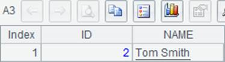
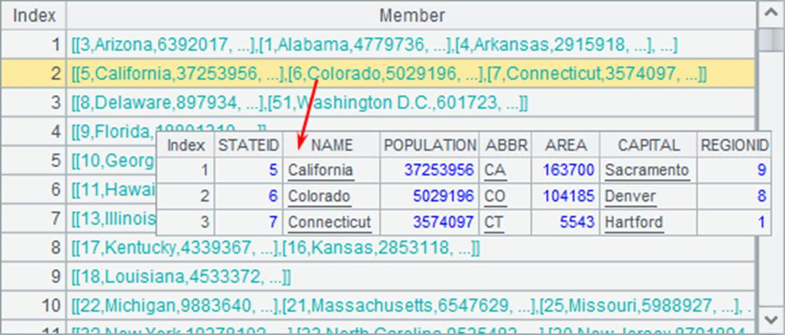
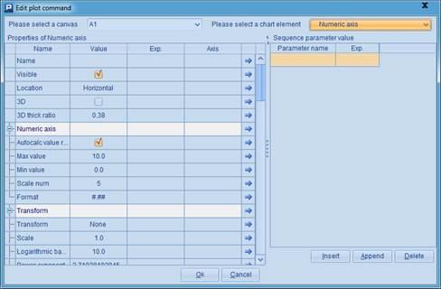
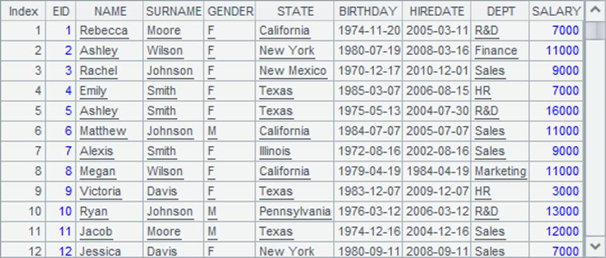
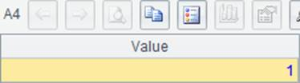
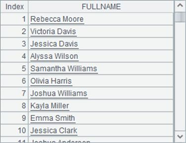

Besides db.query(sql) and db.execute(sql) functions, esProc also uses $(db)sql;… statement to directly execute a SQL statement. If (db) is omitted, connect to the last database used. If parameters are used in the sql statement, put them after the semicolon. This method doesn’t add an equal sign before the sql statement and surround the statement with double quotation marks; nor does it support @1 option any more. In this case, execute function or query function is not needed to tell the statement whether to return a result set or not. A SELECT statement will return a result set, but other statements will return different values respectively. For example:
|
|
A |
|
1 |
$(demo)select * from STATES where ABBR like 'N%' order by POPULATION desc |
|
2 |
[CA,ME,NM,SC,LA] |
|
3 |
$select * from STATES where ABBR in (?) order by AREA;A2 |
The code is functionaly equal to the first two programs in Basic use of SQL statements and gets the same result when executed. A3 doesn’t specify the data source name and thus connect to the last database used, which is still (demo).
Another situation:
|
|
A |
|
1 |
$(demo) create table TESTTEMP (ID int, NAME varchar(20)) |
|
2 |
$(demo) insert into TESTTEMP values (2,'Tom Smith') |
|
3 |
=demo.query("select * from TESTTEMP") |
|
4 |
$(demo)update TESTTEMP set NAME='Jane White' where ID=2 |
|
5 |
=demo.query("select * from TESTTEMP") |
|
6 |
$(demo)drop table TESTTEMP |
A1 creates a new table sequence. A2 inserts a record into it. A4 modifies the data of a record and A6 drops the table sequence. The updates on the database in A3 and A5 are as follows:
 
Though A1, A2, A4 and A6 all execute a SQL statement, they return values instead. This is different from the examples in the above section. Here’re their return values:
 
 
Values of A1 and A6 mean that the SQL statements return no result sets. Values of A2 and A4 indicate that each has updated one record.
The format of $(db)sql;…. makes more concise code. Note that parameters should be introduced by a semicolon and different types of results could be returned.